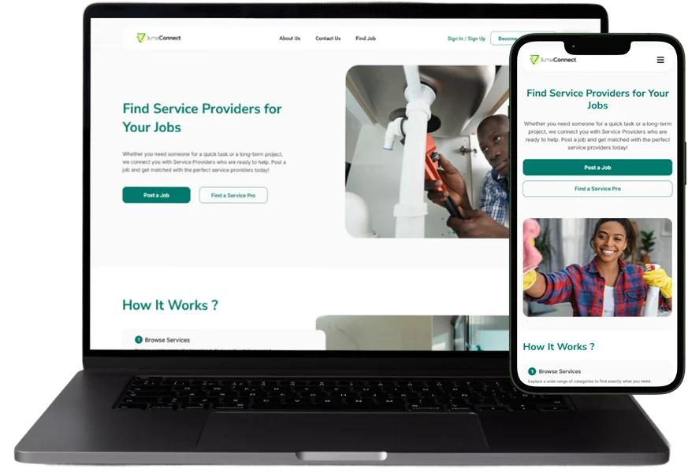

Full StackAt Your Service – Web Application
Developed a full-stack platform connecting users with nearby service providers. Implemented authentication, CRUD operations, location-based filtering, RESTful APIs and form validation.
View on GitHub ↗